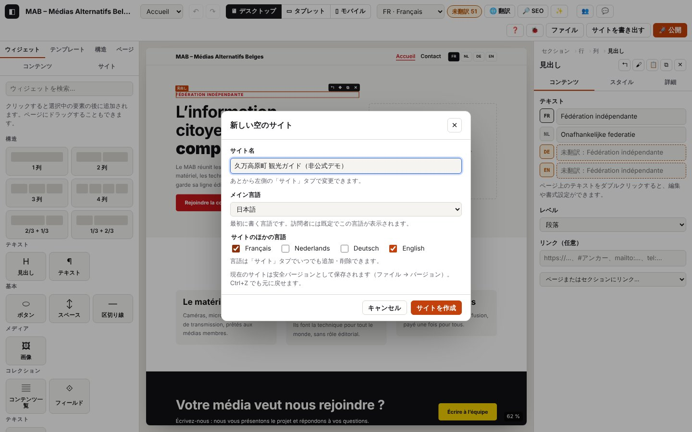

はじめてのガイド：久万高原町の観光サイトを 2 ページで作る

このページの内容
このチュートリアルでは、小さな観光サイトを一歩ずつ実際に作っていきます。題材は Kumakōgen (久万高原町)、四国・愛媛県の山あいの町です。サイトは 2 ページ、3 言語（日本語、英語、フランス語）。最後までやると、Atelier のウィジェットをすべて最低 1 回ずつ使い、言語、色、電話、イベント、SEO、バージョン、チェック、公開と、ほとんどの機能にふれることになります。
所要時間は 2〜3 時間です。何回かに分けてもかまいません。Atelier は自動で保存します。
はじめる前に
作るもの
- 1 ページ目「ホーム」（ホーム）：大きな見出し、主要な数字、3 つの魅力、おすすめスポット、お遍路、町の将来像（キャッチフレーズ）、写真で見る四季、動画、これからのイベント。
- 2 ページ目「イベント・アクセス」（イベントとアクセス）：イベント一覧（今後と過去）、行き方、問い合わせ先、地図、よくある質問、入館料、お問い合わせフォーム。
- すべてのページ共通：ヘッダー（ロゴ、メニュー、言語の切り替え）とフッター（クレジット、SNS）。
データは本物です。 数字、日付、住所、電話番号などの事実は、すべてプロジェクトの確認済みデータファイル（docs/exemple-kumakogen/donnees.md）から取っています。2026 年 10 月 29 日に、久万高原町、愛媛県、気象庁、四国ツーリズム創造機構、日本政府観光局（JNTO）の情報と照らし合わせました。文章は短く書き直したもので、そのままの引き写しではありません。
これは非公式のデモサイトです。 町の公式サイト（https://www.kumakogen.jp/）の代わりにはなりません。このチュートリアルではフッターにそのことをはっきり書きます。サンプルを公開するときは、この注記を残してください。町章や公式ロゴは使わないでください。
画像について。 実際の写真は使いません（写真は撮影者のものです）。ガイドツアーでは、Atelier が簡単なイラストを描きます。このチュートリアルを手作業で進める場合は、画像が必要になるたびにパソコンにある好きな画像を読み込み、あとで自分の写真に差し替えてください。
メイン言語について。 このサイトのメイン言語は日本語です。最初に入力する言語で、サイトのメインのアドレスに使われる言語でもあります。メイン言語はサイトを作るとき（ステップ 1）に選び、あとからは変更できません。
下の表では、どのテキストも 3 言語で示しています。設定欄の JA、EN、FR の行に、それぞれ書き写してください。
必要なもの：幅 1024 ピクセル以上の画面のパソコンと、新しめのブラウザー。オンデバイスAI（任意、ステップ 28）を使う場合は、パソコン版の新しい Chrome が必要です。
各ステップの読み方：すること（クリックする場所。ボタンの名前は画面の表示どおり）、画面の表示、ヒント。ウィジェット名のリンクから、すべてのウィジェットの説明に移動できます。
パート A — サイトの準備
ステップ 1 — プロジェクトを作る
すること
- エディターを開きます。右上の ファイル メニュー → 新しい空のサイト。
- 開いたウィンドウで：
- 「サイト名」：
久万高原町 観光ガイド（非公式デモ） - 「メイン言語」：日本語
- 「サイトのほかの言語」：English と Français にチェック
- 「サイト名」：
- サイトを作成 を押します。
画面の表示：中央に空のページ（キャンバス）、左にパネル（ウィジェット、テンプレート、構造、ページ、コンテンツ、サイト）、右にインスペクターが表示されます。右上には「保存済み」。変更はすべて、このパソコンに自動で保存されます。
ヒント：プロジェクトを置き換える前に、Atelier は前のプロジェクトを安全バージョンとして残しています（ファイル → バージョン…）。また、Ctrl+Z でいつでも直前の操作を元に戻せます。
ステップ 2 — 言語を確認する
すること
- 左のパネルの サイト タブ、基本情報 の 言語 を開きます。
- 日本語（「日本語（メイン）」と表示され、チェックは外せません）、English、Français にチェックが入っていることを確認します。言語はここでいつでも追加・削除できます。
画面の表示：画面上部の言語の一覧に JA、EN、FR が並びます。この一覧で、キャンバスに表示し、入力する言語を選びます。サイトに 2 つ以上の言語があると、🌐 翻訳 ボタン（すべての翻訳をまとめた表）が使えるようになります。
ヒント：エディターそのもの（ボタンなど）の言語は別の設定です：ファイル → 「表示言語」（Français、English、日本語）。このチュートリアルは、エディターの表示が日本語になっていることを前提にしています。
ステップ 3 — 2 つのページを作る
すること
- ページ タブを開きます。ホームのページはすでにあり、JA のタイトルは
ホームです。その設定欄を開き、「タイトル」の EN にHome、FR にAccueilを入力します。 - パネル上部の「新しいページのタイトル」に、メイン言語でタイトル（
イベント・アクセス）を入力し、+ ページ を押します。 - 新しいページの設定欄で、「タイトル」の EN に
Events & access、FR にAgenda & accèsを入力します。 - 「アドレス（言語ごと。空欄＝同じアドレス）」欄：提案されたアドレスを
agendaに書き換えて、Enter を押します。 - 各ページの「Google 向けの説明」（1 文、160 文字以内）：
| ページ | JA | EN | FR |
|---|---|---|---|
| ホーム | 愛媛県の中央、標高約800mの高原のまち・久万高原町の見どころと四季を紹介する非公式デモサイトです。 | Unofficial demo site: the sights and seasons of Kumakōgen, a highland town about 800 m up in central Ehime. | Site de démonstration non officiel : les sites et les saisons de Kumakōgen, commune de montagne au centre d'Ehime. |
| イベント・アクセス | 久万高原町の主なイベント、松山からの行き方、問い合わせ先、入館料をまとめました（非公式デモ）。 | Main events in Kumakōgen, how to get there from Matsuyama, contacts and admission prices (unofficial demo). | Les grands rendez-vous de Kumakōgen, l'accès depuis Matsuyama, les contacts et les tarifs (démonstration non officielle). |
画面の表示：新しいページが空の状態で開き、「ページ「…」を作成しました：/…/」と表示されます。画面上部のページの切り替えに 2 つのページが並びます。メニューでは、ホームがいつも先頭です。
ヒント：ページのアドレスには、ローマ字、数字、ハイフンを使います。日本語のタイトルの場合、Atelier はできるだけ読めるアドレスを提案します（カタカナはローマ字に変換されます）。できないときは予備のアドレスになります。自分で agenda と決めておけば、短くてわかりやすいアドレスになります。英語やフランス語のアドレスは、⟲ ボタンを押すと、翻訳したタイトルから提案されます。
ステップ 4 — 色、フォント、ロゴ
すること
- サイト タブの パレット で、「メイン」の色の丸をクリックし、深い森の緑（例：
#2f6b4f）を選びます。「セカンダリ」は黄土色（例：#c8902e）。隣の欄で色の名前を変えることもできます。 - すぐ下の「コントラスト」の一覧を見ます。どの組み合わせも緑の ✓ のままにしてください。赤い ✗ は、文字が読みにくくなるという意味です。色を濃くするか明るくしてください。
- タイポグラフィ：「見出しのフォント」は
Source Serif 4、「本文のフォント」は「システム（ダウンロード不要）」。「角の丸み」は12。 - 標準のヘッダー → 「ロゴ」→ 画像を読み込む：イラスト（たとえば図案化した山の頂）を選びます。町章は絶対に使わないでください。
画面の表示：サイト全体の色が一度に変わります。新しいフォントを反映するため、キャンバスが再読み込みされます。
ヒント：ロゴを読み込んであれば、🎨 ロゴからパレット（パレットの中）でロゴから 6 色が提案されます。コントラストはすでに補正済みです。パレットを適用 を押すまで何も変わりません。日本語のページでは、選んだフォントの後ろに、Atelier が予備の日本語フォントを自動で追加します。
ステップ 5 — ヘッダーとフッターをブロックで作る
使うウィジェット：サイトのロゴ、メニュー、言語の切り替え、テキスト、SNS。
すること
- サイト タブ → ヘッダーとフッター → 「ヘッダー：標準」の横の ブロックでカスタマイズ。
- 帯に「サイトのヘッダーを編集中です — すべてのページ」と表示されます。ヘッダーには 3 つの列があります：サイトのロゴ、メニュー、言語の切り替え。言語の切り替え をクリック → インスペクターの コンテンツ タブ → 「表示」：名前（Français…）。
- サイトのロゴ をクリック → 「ロゴの高さ」：
40 px。「サイト名を表示」はそのままにします。 - 帯の 完了 を押します。
- フッター も同じように ブロックでカスタマイズ します。フッターには、サイトのロゴ、テキスト、メニュー（縦並び）、SNS があります。
- フッターの テキスト をダブルクリックし、下のクレジットを入力します（言語ごとに画面上部で言語を切り替えるか、インスペクターで 3 行とも入力します）。
- SNS をクリック → 「リンク」：例として入っている 3 行を ✕ で削除し、+ リンク → 「サービス」：「ウェブサイト」、「アドレス」：
https://www.kumakogen.jp/（町の公式サイト）。完了。
| フッターのテキスト | |
|---|---|
| JA | 非公式のデモサイトです。データ：久万高原町、久万高原町観光協会、愛媛県、気象庁、四国ツーリズム創造機構、日本政府観光局（2026年10月29日確認）。イラストはオリジナルです。 |
| EN | Unofficial demo site. Data: Kumakōgen Town, Kumakōgen Tourism Association, Ehime Prefecture, Japan Meteorological Agency, Shikoku Tourism, JNTO (checked on 29 October 2026). Original illustrations. |
| FR | Site de démonstration non officiel. Données : commune de Kumakōgen, office de tourisme de Kumakōgen, préfecture d'Ehime, Agence météorologique du Japon, Shikoku Tourism, JNTO (vérifiées le 29/10/2026). Illustrations originales. |
画面の表示：メニューにはもう 2 つのページが並び、言語の切り替えには「日本語 · English · Français」と表示されます。編集中は、ページのほかの部分がグレーになります。
ヒント：ページ上のヘッダーやフッターをダブルクリックすると、また編集できます。標準に戻す を押すと、ブロック版が取り消されます。観光協会のサイト（kuma-kanko.com）は入れないでください。2026 年 10 月 28 日から一時閉鎖されています。
パート B — 1 ページ目「ホーム」
画面上部のページの切り替えで ホーム を選びます（または Ctrl+K で「ページ：ホーム」）。
ステップ 6 — トップのセクション
使うウィジェット：セクション、行、列、見出し、テキスト、ボタン、画像。
すること
- テンプレート タブ → セクションのテンプレート → ヒーロー（「大きな見出し、テキスト、ボタン 2 つ、画像」）。
- 左上の小さな見出しをクリックし、さらにダブルクリックして入力します（下の表）。大きな見出し、テキスト、2 つのボタンも同じようにします。見出しとボタンは Enter で、テキストは Esc で入力を終えます。
- 1 つ目のボタンを選択 → 「リンク」→ 「ページまたはセクションにリンク…」の一覧 →
イベント・アクセス (/agenda/)。2 つ目のボタンも同じようにします。 - 右側の画像の枠をクリック → 「画像」：画像を読み込む → 「説明（スクリーンリーダーと Google 向け）」（表を参照）。
- Esc を何回か押します。選択がウィジェットから、その列、行、セクションへと順に上がっていきます。インスペクターの上部に「セクション › 行 › 列 › …」という経路が表示されます。
| 要素 | JA | EN | FR |
|---|---|---|---|
| 上の小見出し（見出し、レベル「段落」） | 四国の軽井沢 | The Karuizawa of Shikoku | Le « Karuizawa de Shikoku » |
| 大きな見出し（H1） | 久万高原町へようこそ | Welcome to Kumakōgen | Bienvenue à Kumakōgen |
| テキスト | 愛媛県のほぼ中央、標高およそ800mの高原のまち。夏は涼しく、冬は雪に包まれます。 | A highland town in the heart of Ehime, about 800 m above sea level, with cool summers and snowy winters. | Une commune de montagne au centre de la préfecture d'Ehime, à environ 800 m d'altitude, aux étés frais et aux hivers enneigés. |
| ボタン 1 | イベントを見る | See the events | Voir l'agenda |
| ボタン 2 | アクセス | Getting here | Venir à Kumakōgen |
| 画像の説明 | 高原の風景のイラスト | Illustration of a highland landscape | Illustration d'un paysage de montagne |
画面の表示：2 列のセクションができ、左にテキスト、右に画像が並びます。ページ上では、選択したウィジェットに ↰ ✥ ⧉ ✕ のバーが付きます。
ヒント：テンプレートの例文はフランス語です。メイン言語が日本語の場合、最初は JA の行が空のことがあります（日本語表示ではページが空に見えます）。まず JA を入力し、それからほかの言語を入力してください。H1 は 1 ページに 1 つだけ、大きな見出しに使います。
ステップ 7 — ほかの言語で書く
すること
- 画面上部の言語の一覧で EN · English を選びます。
- 大きな見出しをダブルクリックします。今度は英語版を書くことになります。FR でも同じようにします。
- JA に戻ります。
画面の表示：選んだ言語でキャンバスが再読み込みされます。インスペクターでは、表示中の言語の行が強調されます。翻訳されていない行は色が付き、「未翻訳：…」と表示されます。
ヒント：画面上部の「未翻訳 N」のバッジで、足りない翻訳の数がわかります。作業しながら全部を翻訳する必要はありません。ステップ 26 で、すべてをまとめた表を使います。
ステップ 8 — 主要な数字
使うウィジェット：主要な数字。
すること
- トップのセクションを選択し、テンプレート → 主要な数字。セクションがすぐ後ろに追加されます。
- 数字をクリック → インスペクターの「数字」：3 行を書き換え、+ 数字 で 4 行目を追加します。
| 値（3 言語で共通） | キャプション JA | キャプション EN | キャプション FR |
|---|---|---|---|
| 584 km² | 愛媛県でいちばん広い町 | the largest municipality in Ehime | la plus grande commune d'Ehime |
| ≈ 800 m | 平均標高 | average altitude | altitude moyenne |
| 12.8 °C | 年平均気温（松山は16.8 °C） | average yearly temperature (Matsuyama: 16.8 °C) | température moyenne annuelle (Matsuyama : 16,8 °C) |
| 1982 m | 石鎚山・西日本最高峰 | Mt Ishizuchi, highest peak in western Japan | mont Ishizuchi, plus haut sommet de l'ouest du Japon |
画面の表示：メインカラーの帯に、4 つの大きな数字が並びます。スマートフォンでは縦に並びます。
ヒント：値 は翻訳されません。3 言語のどれでも読める書き方にしてください（12,8 °C ではなく 12.8 °C）。出典：久万高原町（面積、標高）、気象庁の平年値 1991〜2020 年（気温）、西条市（石鎚山）。
ステップ 9 — 久万高原町の 3 つの楽しみ方
使うウィジェット：アイコン付きボックス。
すること
- テンプレート → 特長（「見出しとアイコン付きボックス 3 つ」）。
- 見出しと導入文を入力し、ボックスごとに「アイコン」「タイトル」「テキスト」を設定します。
| 要素 | JA | EN | FR |
|---|---|---|---|
| 見出し | 久万高原町の楽しみ方 | Three ways to enjoy Kumakōgen | Trois façons de découvrir Kumakōgen |
| 導入文 | 大自然、お遍路、そして星空。 | Nature, pilgrimage and starry skies. | Nature, pèlerinage et ciel étoilé. |
| ボックス 1 — アイコン 地球 | 大自然 / 四国カルストの高原と、エメラルド色の面河渓。 | Nature / The Shikoku Karst plateau and the emerald Omogo Gorge. | Nature / Le plateau du Shikoku Karst et les gorges émeraude d'Omogo. |
| ボックス 2 — アイコン 場所 | お遍路 / 四国八十八ヶ所の第44番・第45番札所があります。 | Pilgrimage / Temples 44 and 45 of the Shikoku 88-temple pilgrimage. | Pèlerinage / Les temples 44 et 45 du pèlerinage des 88 temples de Shikoku. |
| ボックス 3 — アイコン 星 | 星空 / 口径60cmの望遠鏡を備えた天体観測館。 | Starry skies / An observatory with a 60 cm telescope. | Ciel étoilé / Un observatoire équipé d'un télescope de 60 cm. |
（「ボックス」の各欄では、「/」の前が「タイトル」、後ろが「テキスト」です。）
画面の表示：中央揃えの見出しの下に、3 つのボックスが 1 行に並びます。このセクションには行が 2 つあります。見出しの行と、ボックスの行です。
ヒント：ボックスの「レイアウト」は アイコンを上に、アイコンを左に、中央揃え から選べます。
ステップ 10 — おすすめスポット
使うウィジェット：コンテンツカード。
すること
- テンプレート → ニュース（「画像、テキスト、リンク付きのカード 3 つ」）。
- セクションの見出し：JA
おすすめスポット、ENPlaces to visit、FRSites à visiter。 - カードごとに「画像」（イラストを読み込む）、「画像の説明」、「タイトル」、「テキスト」を設定します。「リンクのテキスト」は空にします。リンクがないと「… →」の行が消えます。
| カード | JA | EN | FR |
|---|---|---|---|
| 1. タイトル | 四国カルスト | Shikoku Karst | Shikoku Karst |
| 1. テキスト | 標高1,000〜1,500mに広がるカルスト台地。牛の放牧と大パノラマが楽しめます。冬は道路が閉鎖されます。 | A limestone plateau 1,000 to 1,500 m up, with grazing cattle and sweeping views. The road closes in winter. | Un plateau calcaire entre 1 000 et 1 500 m d'altitude, avec des vaches en pâture et une vue immense. Route fermée en hiver. |
| 2. タイトル | 面河渓 | Omogo Gorge | Gorges d'Omogo |
| 2. テキスト | エメラルドグリーンの清流と奇岩が続く渓谷。秋の紅葉は四国屈指の美しさです。 | An emerald-water gorge with easy riverside trails, famous for its autumn colours. | Une gorge aux eaux émeraude, avec des sentiers faciles et l'un des plus beaux feuillages d'automne de Shikoku. |
| 3. タイトル | 古岩屋 | Furuiwaya | Furuiwaya |
| 3. テキスト | 円錐形の礫岩峰が林立する国の名勝。紅葉の季節が特に見事です。 | A cluster of striking conglomerate rock spires, explored on a short loop trail. | Une forêt de pitons rocheux étonnants, à parcourir en une courte boucle. |
画面の表示：3 枚のカードが横に並びます。画像を選ぶまでは、グレーの「画像」の枠が表示されます。
ヒント：自動で更新される一覧（イベントなど）には、コンテンツカードでは足りません。それはコンテンツ一覧の役目です（ステップ 17）。
ステップ 11 — お遍路
すること
- テンプレート → テキストと画像（「左に段落、右に画像」）。
- 見出しを入力し、続いてテキスト：中をダブルクリックし、1 つ目の段落を書き換えて、2 つ目の段落を消します。
- アイコン付きリスト をクリック → 「項目」：各行に「アイコン」と「テキスト」を設定します。
- 右の画像：イラスト（杉木立の中の寺）を読み込み、「説明」：JA
杉木立の中の寺のイラスト、ENIllustration of a temple among cedars、FRIllustration d'un temple dans les cèdres。
| 要素 | JA | EN | FR |
|---|---|---|---|
| 見出し | お遍路の道 | On the pilgrims' path | Sur le chemin des pèlerins |
| テキスト | 四国八十八ヶ所霊場のうち、第44番大宝寺と第45番岩屋寺が町内にあります。両寺の間は歩いて約9km、約3時間30分です。 | Two temples of the Shikoku 88-temple pilgrimage are in Kumakōgen: Daihō-ji (no. 44) and Iwaya-ji (no. 45). They are about 9 km apart on foot, around 3 h 30. | Deux temples du pèlerinage des 88 temples de Shikoku sont à Kumakōgen : le Daihō-ji (n° 44) et l'Iwaya-ji (n° 45). Ils sont à environ 9 km l'un de l'autre à pied, soit environ 3 h 30. |
| 1 行目 — アイコン 場所 | 第44番 大宝寺：701年創建と伝わる「中札所」 | No. 44 Daihō-ji: founded in 701, the "middle temple" of the pilgrimage | N° 44 Daihō-ji : fondé en 701, le « temple du milieu » du pèlerinage |
| 2 行目 — アイコン 場所 | 第45番 岩屋寺：巨大な岩壁に抱かれた札所（石段は約266段） | No. 45 Iwaya-ji: built against a huge rock face (about 266 steps) | N° 45 Iwaya-ji : adossé à une immense falaise (environ 266 marches) |
| 3 行目 — アイコン 時計 | 44番から45番まで徒歩約3時間30分 | From no. 44 to no. 45: about 3 h 30 on foot | Du n° 44 au n° 45 : environ 3 h 30 à pied |
画面の表示：左にテキストとリスト、右に画像が並びます。アイコンはメインカラーになります。
ヒント：+ 要素 で行を追加、↑ ↓ で順番を入れ替え、✕ で削除します。
ステップ 12 — 町の将来像
使うウィジェット：引用。
すること
- お遍路の アイコン付きリスト を選択します（引用はそのすぐ後ろ、同じ列に入ります）。
- ウィジェット タブ → コンテンツ のグループ → 引用。
- 「引用」、「著者」：
久万高原町、「役職またはメディア」を入力し、「外観」は 大きな引用 にします。
| 要素 | JA | EN | FR |
|---|---|---|---|
| 引用 | ひと・里・森がふれあい ともに輝く 元気なまち | A lively town where people, villages and forests meet and shine together | Une commune vivante où les gens, les villages et la forêt se rencontrent et brillent ensemble |
| 役職またはメディア | まちの将来像（町の公式サイトより） | The town's vision for the future (official website; our translation) | La vision d'avenir de la commune (site officiel ; notre traduction) |
画面の表示：文が大きく表示され、色の付いた引用符が付きます。
ヒント：引用は本物でなければいけません。ここで使うのは、町が公式に掲げている将来像です。言っていない言葉を、誰かの言葉として載せることは絶対にしないでください。
ステップ 13 — 写真で見る四季
すること
- お遍路のセクションを選択し、テンプレート → ギャラリー。
- 見出し：JA
四季の久万高原、ENKumakōgen through the seasons、FRKumakōgen au fil des saisons。 - ギャラリーをクリック → 「画像」：枠が 3 つあるので、+ 画像 で 4 つ目を追加します。それぞれに「画像」、「説明」、「キャプション」を設定します（説明とキャプションは同じテキスト。表を参照）。「列数（デスクトップ）」：
4。「クリックで拡大」はそのままにします。 - ギャラリーの見出しを選択し、ウィジェット → 基本 のグループ → スペース。見出しの下に入ります。「高さ」：
32 px。詳細 タブ → 「非表示にするデバイス」：モバイル にチェック。
| 画像 | JA | EN | FR |
|---|---|---|---|
| 1 | 春〜秋：四国カルストの放牧 | Spring to autumn: cattle grazing on the Shikoku Karst | Du printemps à l'automne : vaches sur le Shikoku Karst |
| 2 | 夏：天体観測館で星空観察 | Summer: stargazing at the observatory | Été : les étoiles à l'observatoire |
| 3 | 秋：面河渓の紅葉 | Autumn: autumn colours in the Omogo Gorge | Automne : feuillages des gorges d'Omogo |
| 4 | 冬：久万スキーランド | Winter: Kuma Ski Land | Hiver : Kuma Ski Land |
画面の表示：4 枚の画像が 1 行に並びます。エディターでは、モバイルで非表示にしたスペースも半透明で見えています（選択できるようにするためです）。
ヒント：公開したサイトでは、クリックすると画像が拡大され、Esc で閉じます。スマートフォンでは、ギャラリーは 1 行に 2 枚になります。
ステップ 14 — 動画
使うウィジェット：動画。
すること
- テンプレート → 動画（「中央揃えの見出しと動画」）。
- 見出し：JA
動画で見る久万高原町、ENKumakōgen on video、FRKumakōgen en vidéo。 - 動画をクリック → 「YouTube または Vimeo のアドレス」：[久万高原町のデータ（要入力）：町または観光協会が公開している動画のアドレス]。「タイトル（スクリーンリーダーが読み上げます）」：その動画のタイトル。「プレビュー画像（任意）」：イラスト。
画面の表示：▶ ボタンの付いた画像が表示されます。アドレスを入れるまでは、キャンバスに「インスペクターに YouTube または Vimeo のアドレスを貼り付けてください」と表示されます。
ヒント：公開したサイトでは、訪問者がクリックするまで YouTube からは何も読み込まれません。公式の動画がない場合は、公開する前にこのセクションを削除してください。書き出し前のチェックで、アドレスのない動画が指摘されます。
パート C — 2 ページ目「イベント・アクセス」
ページ イベント・アクセス を開きます（画面上部の切り替え、または Ctrl+K で「ページ：イベント・アクセス」）。
ステップ 15 — 見出しと導入文
すること
- ウィジェット タブ → いちばん上の 構造 のグループ → 1 列。空のセクションが追加されます。
- テキスト のグループ → 見出し。インスペクターで「レベル」を H1 – ページのタイトル にします。続いて テキスト を追加します。
| 要素 | JA | EN | FR |
|---|---|---|---|
| 見出し（H1） | イベントとアクセス | Events and getting here | Agenda et accès |
| テキスト | 久万高原町の主なイベントと、松山からの行き方をまとめました。日程は年によって変わることがあります。お出かけ前に公式情報をご確認ください。 | The main events in Kumakōgen and how to get here from Matsuyama. Dates can change from year to year: please check official information before you go. | Les grands rendez-vous de Kumakōgen et l'accès depuis Matsuyama. Les dates peuvent changer d'une année à l'autre : vérifie les informations officielles avant de partir. |
画面の表示：クリックで追加したウィジェットは、選択中のウィジェットのすぐ後ろに入ります。セクションを選択している場合は、その最初の列に入ります。何も選択していない場合は、Atelier がページの最後に新しいセクションを作ります。
ヒント：パネルからウィジェットを好きな場所までドラッグすることもできます。落ちる場所が青い線で示されます。
ステップ 16 — イベントのコレクションを作る
すること
- コンテンツ タブ → + 新しいコレクション。
- 「コレクションの種類」：📅 イベント。名前は提案された
イベントのままにします。「リストページも作成する（メニューに追加）」（2 ページ目がその役目をします）と「置き換え用の例をいくつか追加する」のチェックを外し、コレクションを作成 を押します。 - コンテンツ パネルで イベント をクリックすると、コレクションのウィンドウが開きます（項目、フィールド、設定 のタブ）。
- 設定 タブ：「項目ページのアドレス（言語別）」のメイン言語（JA）の欄を
agendaに書き換えます（名前「イベント」からはibentoが提案されます）。すると「リストページ（「戻る」リンク）」に イベント・アクセス のページが表示されます（同じアドレスなので「自動（…）」。表示されないときは一覧から選びます）。 - 項目 タブ → 表のイベントごとに + 追加。フィールドを入力し、「項目のアドレス」（フォームの上）を書き換えてから、項目の「ステータス」を ○ 下書き（公開しない） から ● 公開 に切り替えます。
| イベント | タイトル（JA / EN / FR） | 日付・時刻 | 場所 · 住所 | 説明（JA / EN / FR） |
|---|---|---|---|---|
アドレス oyamabiraki | 石鎚山お山開き / Mt Ishizuchi season opening (O-yamabiraki) / Ouverture de la saison du mont Ishizuchi | 日付 2027-07-01、終了日 2027-07-10 | 石鎚神社 土小屋遥拝殿 (Tsuchigoya) · 空欄 | 毎年7月1日〜10日。期間中、石鎚スカイラインは午前4時から通行できます。 / Every year from 1 to 10 July. During the festival, the Ishizuchi Skyline road opens at 4 am. / Chaque année du 1er au 10 juillet. Pendant la fête, la route Ishizuchi Skyline ouvre dès 4 h. |
アドレス joya-no-kane | 大宝寺の除夜の鐘 / New Year's Eve bell at Daihō-ji / Cloche du Nouvel An au Daihō-ji | 日付 2026-12-31、開始時刻 23:45 | 大宝寺 Daihō-ji (n° 44) · 愛媛県上浮穴郡久万高原町菅生2-1173-2 | どなたでも並んで鐘をつくことができます（無料）。 / Everyone can queue to ring the bell, free of charge. / Chacun peut faire la queue pour sonner la cloche, gratuitement. |
アドレス kumabi-messe-2026 | 久万美メッセ2026「流動」 / Kumabi Messe 2026 exhibition / Exposition Kumabi Messe 2026 | 日付 2026-04-26、終了日 2026-09-03 | 町立久万美術館 Kuma Art Museum · 愛媛県上浮穴郡久万高原町菅生2番耕地1442-7 | 町立久万美術館の展覧会。2026年のテーマは「流動」。 / An exhibition at the Kuma Art Museum; the 2026 theme is "Ryūdō". / Une exposition du musée d'art Kuma ; thème 2026 : « Ryūdō ». |
アドレス kuma-ski-land-2025 | 久万スキーランド 2025-26シーズン / Kuma Ski Land, 2025-26 season / Kuma Ski Land, saison 2025-2026 | 日付 2025-12-08、終了日 2026-03-08 | 久万スキーランド Kuma Ski Land · 愛媛県上浮穴郡久万高原町東明神 | 標高900〜1,003mのゲレンデ。ナイターは22時まで。 / Slopes from 900 to 1,003 m; night skiing until 10 pm. / Pistes de 900 à 1 003 m ; ski de nuit jusqu'à 22 h. |
展覧会には、「申し込みまたはチケット」に https://www.kumakogen.jp/site/muse/26148.html（美術館の公式ページ）を入力します。イベントの「ステータス」は、どれも「予定どおり」のままにします。
画面の表示：項目の一覧に、それぞれの日付が表示されます。下書きの項目にはそのことが表示され、サイトのどこにも出ません。
ヒント：「場所」と「住所」は翻訳されません。日本語の後ろにローマ字の名前を付けて、1 回だけ書きます。日付は YYYY-MM-DD の形で書きます。石鎚山のお山開きは毎年同じ日程です。ほかの 2 つのイベントはもう終わっていて、「過去」の一覧に使います。2026-2027 年のスキーシーズンの日程は 11 月に発表されるので、発表されたら追加してください。項目が多いときは、⇧ CSV を読み込む で表計算ソフトから取り込めます。
ステップ 17 — イベントを表示する
すること
- 導入文を選択します。ウィジェット → 見出し：JA
これからのイベント、ENUpcoming events、FRProchains événements。 - コレクション のグループ → コンテンツ一覧。インスペクター：「コレクション」：
イベント (4)、「レイアウト」：カードのグリッド、「列数（デスクトップ）」：2、「イベント」：今後、「一覧が空のときのテキスト」：JA現在予定されているイベントはありません。、ENNo upcoming events for now.、FRAucun événement à venir pour l'instant. - 基本 のグループ → 区切り線：「線」：点線、「長さ」：
50 %。 - 見出し：JA
これまでのイベント、ENPast events、FRÉvénements passés。続いて 2 つ目の コンテンツ一覧：同じコレクションで、「イベント」：過去、「方向」：降順（Z→A、新しい順）。
画面の表示：「今後」のカードが 2 枚（石鎚山のお山開きと除夜の鐘）、区切り線、そして「過去」のカードが 2 枚。どのカードにも、画像、日付、タイトル、場所、イベントのページへのリンクが表示されます。
ヒント：公開したサイトでは、訪問者が見ている日の日付 で判断されます。2027 年 1 月 1 日になると、除夜の鐘は自動で「過去」に移ります。公開し直す必要はありません。インスペクター上部の枠には、項目を管理、✎ カード、✎ 詳細ページ があります。
ステップ 18 — イベントのカードとページをデザインする
使うウィジェット：フィールド。
すること
- どちらかの一覧をダブルクリックします（またはインスペクターの ✎ カード）。帯に「「イベント」のカードを編集中です — このコレクションのすべてのリストに反映されます」と表示されます。
- 帯の「プレビュー：…」の一覧で
大宝寺の除夜の鐘を選びます。カードが実際の値で表示されます。 - 場所の フィールド（場所のアイコン）を選択し、ウィジェット → コレクション のグループ → フィールド。すぐ下に入ります。「表示するフィールド」：「住所」、「値の前のラベル（任意）」：JA
住所：、ENAddress:、FRAdresse :、「アイコン」：なし。 - 完了 を押します。次に、一覧のインスペクターで ✎ 詳細ページ を押します。これがイベントごとのページです（タイトル、日時、場所、住所、画像、説明、「カレンダーに追加」ボタン）。プレビューする項目をいくつか切り替えて確認し、完了 を押します。
画面の表示：両方の一覧のすべてのカードに、イベントごとの住所が表示されます。住所のないイベントでは何も表示されません。
ヒント：日付はページの言語で表示されます（日本語なら「2026年12月31日…」）。「日付の形式」で長い形、短い形、曜日付きの形を選べます。公開したサイトでは、「カレンダーに追加」ボタンでファイルがダウンロードされ、訪問者のスマートフォンのカレンダーに追加できます。
ステップ 19 — アクセスとお問い合わせ
使うウィジェット：アイコン付きリスト、地図、SNS、フォーム、テキスト。
すること
- イベントのセクションを選択し、テンプレート → お問い合わせ（「連絡先、地図、フォーム」）。
- セクションを選択 → 詳細 タブ → 「アンカー（#アンカー リンク用）」：
contactをaccesに書き換えます。 - 左の見出し：JA
アクセス・お問い合わせ、ENGetting here & contacts、FRAccès et contacts。見出しの下に テキスト を追加します（表を参照）。 - アイコン付きリスト：3 行を表の行に置き換えます（最初の 3 行はアイコン 電話、最後の行は 場所）。電話番号は、その行をダブルクリックし、番号を選択して 🔗 を押し、
tel:0892211111（例）と入力します。スマートフォンでタップすると電話がかかります。 - 地図：「住所」：
愛媛県上浮穴郡久万高原町入野1855-6、「ズーム（3〜20）」：15、「高さ」：320 px。 - テンプレートには SNS も入っていますが、フッターにすでにあるので、こちらは削除します（✕）。
- フォーム（右側）：「メッセージを受け取るメールアドレス」には自分のメールアドレスを入力します（デモサイトなので、役場のアドレスは入れないでください）。「メッセージの件名」、「フィールド」のラベル（お名前 / Name / Nom、メールアドレス / Email / E-mail、メッセージ / Message / Message）、「ボタンのテキスト」（送信 / Send / Envoyer）、「プライバシーに関する注記（任意）」を翻訳します。
| 要素 | JA | EN | FR |
|---|---|---|---|
| アクセスのテキスト | 松山から国道33号（三坂峠経由）で約34km、松山ICから町の中心部まで車で約30分です。町内に鉄道の駅はありません。JR松山駅からJR四国バスで約1時間〜1時間10分です。 | About 34 km from Matsuyama on Route 33 (via the Mikasa Pass), around 30 minutes by car from Matsuyama IC to the town centre. There is no railway station in the town: the JR Shikoku bus from JR Matsuyama Station takes about 1 h to 1 h 10. | Environ 34 km depuis Matsuyama par la route nationale 33 (col de Mikasa), soit environ 30 minutes en voiture de l'échangeur Matsuyama IC au centre. Il n'y a pas de gare dans la commune : le bus JR Shikoku met environ 1 h à 1 h 10 depuis la gare JR de Matsuyama. |
| 1 行目 | 久万高原町役場 0892-21-1111 | Kumakōgen Town Office: +81 892-21-1111 | Mairie de Kumakōgen : +81 892-21-1111 |
| 2 行目 | 観光振興係 0892-21-1116 | Tourism section of the Town Office: +81 892-21-1116 | Service du tourisme de la mairie : +81 892-21-1116 |
| 3 行目 | 久万高原町観光協会 0892-21-1192 | Kumakōgen Tourism Association: +81 892-21-1192 | Office de tourisme de Kumakōgen : +81 892-21-1192 |
| 4 行目 | 道の駅 天空の郷さんさん（観光案内 9:00〜17:00）〒791-1202 久万高原町入野1855-6 | Roadside station Tenkū no Sato Sansan (tourist information, 9 am–5 pm) | Aire routière Tenkū no Sato Sansan (information touristique, 9 h–17 h) |
| メッセージの件名 | サイトからのお問い合わせ | Message from the website | Message depuis le site |
| プライバシーに関する注記 | いただいた情報は返信のためだけに使います。 | Your details are only used to reply to you. | Vos données servent uniquement à vous répondre. |
リストの下に小さな テキスト を追加します：JA 公開情報（2026年10月29日確認）、EN Public information, checked on 29 October 2026、FR Données publiques, vérifiées le 29/10/2026。
画面の表示：左に連絡先と地図、右にフォームが並びます。受信用のアドレスがないと、フォームに「⚠ インスペクターでメッセージを受け取るメールアドレスを入力してください。」と表示されます。
ヒント：地図は、訪問者がクリックしたときにだけ Google マップを読み込みます。横には OpenStreetMap へのリンクも表示されます。公式のメールアドレスを作り出すことは絶対にしないでください。公開されているアドレスで見つかったのは個人のものだけでした。それは使わないでください。
ステップ 20 — よくある質問
使うウィジェット：アコーディオン（FAQ）。
すること
- テンプレート → よくある質問（「見出しとアコーディオン」）：中央揃えの見出しとアコーディオンのセクションです。
- 見出し：JA
よくある質問、ENFrequently asked questions、FRQuestions fréquentes。 - アコーディオン → 「質問」：例の 2 つの質問を書き換え、+ 質問 で残りの 2 つを追加します。「最初の回答を開いておく」と「Google に FAQ として伝える（構造化データ）」はそのままにします。
| JA | EN | FR | |
|---|---|---|---|
| Q1 | 松山からどうやって行けますか？ | How do I get there from Matsuyama? | Comment venir depuis Matsuyama ? |
| A1 | 車なら国道33号で約34km、松山ICから町の中心部まで約30分です。バスはJR松山駅からJR四国バスで約1時間〜1時間10分。本数が少ないので、JR四国バスと伊予鉄南予バスの時刻表をご確認ください。 | By car, about 34 km on Route 33, around 30 minutes from Matsuyama IC to the town centre. By bus, the JR Shikoku bus from JR Matsuyama Station takes about 1 h to 1 h 10. Buses are infrequent: check the JR Shikoku Bus and Iyotetsu Nanyo Bus timetables. | En voiture, environ 34 km par la route 33, soit environ 30 minutes de Matsuyama IC au centre. En bus, le bus JR Shikoku met environ 1 h à 1 h 10 depuis la gare JR de Matsuyama. Les bus sont rares : consulte les horaires de JR Shikoku Bus et d'Iyotetsu Nanyo Bus. |
| Q2 | 町内に駅はありますか？ | Is there a train station? | Y a-t-il une gare ? |
| A2 | 町内に鉄道の駅はありません。JR四国バスで「久万中学校前」または「久万高原」まで行き、伊予鉄南予バスや町営バスに乗り換えます。 | No, there is no railway station in the town. Take the JR Shikoku bus to "Kuma Chūgakkō-mae" or "Kumakōgen", then change to Iyotetsu Nanyo buses or town buses. | Non, la commune n'a pas de gare. Le bus JR Shikoku va jusqu'aux arrêts « Kuma Chūgakkō-mae » ou « Kumakōgen » ; on continue avec les bus Iyotetsu Nanyo ou les bus municipaux. |
| Q3 | おすすめの季節は？ | When is the best time to visit? | Quelle est la meilleure saison ? |
| A3 | 夏は涼しく（8月の平均気温は24.5 °C、松山は28.1 °C）、星空も楽しめます。秋（10月〜11月中旬）は紅葉の季節です。石鎚スカイラインは4月〜11月に通行でき、12月〜3月は閉鎖されます。冬は雪が多く、スキーが楽しめます。 | Summer is cool (24.5 °C on average in August, against 28.1 °C in Matsuyama) and great for stargazing. Autumn (October to mid-November) brings the autumn colours. The Ishizuchi Skyline road is open from April to November and closed from December to March. Winter is snowy, with skiing. | L'été est frais (24,5 °C en moyenne en août, contre 28,1 °C à Matsuyama) et idéal pour les étoiles. L'automne (octobre à mi-novembre) est la saison des feuillages. La route Ishizuchi Skyline est ouverte d'avril à novembre et fermée de décembre à mars. L'hiver est enneigé : on y skie. |
| Q4 | どこに泊まれますか？ | Where can I stay? | Où dormir ? |
| A4 | 天体観測館のとなりの「久万高原ふるさと旅行村」に、通年のコテージ・バンガローと、4月〜11月末のキャンプ場があります（0892-41-0711）。ほかの宿は観光協会（0892-21-1192）へお問い合わせください。 | Kumakōgen Furusato Ryokō-mura, next to the observatory, has cabins and bungalows all year and a campsite from April to the end of November (+81 892-41-0711). For other places to stay, contact the Tourism Association (+81 892-21-1192). | Le village de vacances Kumakōgen Furusato Ryokō-mura, à côté de l'observatoire, propose des chalets et bungalows toute l'année et un camping d'avril à fin novembre (+81 892-41-0711). Pour les autres hébergements, contacte l'office de tourisme (+81 892-21-1192). |
画面の表示：質問が並び、最初の質問だけ開いています。クリックすると回答が開いたり閉じたりします。
ヒント：回答には太字やリンクも使えます（ページ上でダブルクリック）。「Google に FAQ として伝える」をオンにすると、公開したサイトに Google が読める説明が追加されます。
ステップ 21 — 入館料
使うウィジェット：料金。
すること
- テンプレート → 料金（「3 つのプラン（中央を強調）」）。
- 見出し：JA
入館料（大人）、ENAdmission (adults)、FRTarifs d'entrée (adultes)。導入文：JA2026年10月29日時点の情報です。最新の料金は各施設にご確認ください。、ENInformation checked on 29 October 2026: please check prices with each venue.、FRInformations vérifiées le 29/10/2026 : vérifie les tarifs auprès de chaque lieu. - それぞれの 料金 に「プラン」、「価格（例：49 €）」、「期間（例：月額）」、「含まれるもの（箇条書き）」（1 行に 1 項目）、「ボタンのテキスト」、「ボタンのリンク」を設定します。中央の料金は「強調する」をそのままにし、「バッジ（例：いちばん人気）」を設定します。
| 1 | 2（強調） | 3 | |
|---|---|---|---|
| プラン | 町立久万美術館 / Kuma Art Museum / Musée d'art Kuma | 天体観測館 / Astronomical Observatory / Observatoire astronomique | 上黒岩考古館 / Kamikuroiwa site museum / Musée du site de Kamikuroiwa |
| 価格 | ¥500 | ¥500 | ¥100 |
| 期間 | 大人（2026年の展覧会）/ adults (2026 exhibition) / adulte (exposition 2026) | 大人 / adults / adulte | 大人 / adults / adulte |
| 含まれるもの | 9:30〜17:00（入館は16:30まで）・月曜休館 / 9:30 am–5 pm (last entry 4:30 pm) · closed on Mondays / 9 h 30–17 h (dernière entrée 16 h 30) · fermé le lundi | 観望会：金・土 19:00〜22:00（予約制）・口径60cmの反射望遠鏡 / Night viewing: Fri & Sat 7–10 pm (booking required) · 60 cm reflecting telescope / Observation : vendredi et samedi 19 h–22 h, sur réservation · télescope à miroir de 60 cm | 4月〜11月 9:00〜17:00・月曜休館・縄文時代の岩陰遺跡 / April–November, 9 am–5 pm · closed on Mondays · Jōmon-period rock shelter / Avril à novembre, 9 h–17 h · fermé le lundi · abri sous roche de la période Jōmon |
| ボタン | 公式ページ / Official page / Page officielle → https://www.kumakogen.jp/site/muse/ | （空欄：ボタンなし） | （空欄：ボタンなし） |
| バッジ | （空欄） | 夏は天の川 / Milky Way in summer / Voie lactée en été | （空欄） |
（3 言語の欄は JA / EN / FR の順です。「·」（日本語では「・」）は箇条書きの区切りです。）
画面の表示：3 つの列が並び、中央の列には色の付いた枠と、上にバッジが付きます。
ヒント：価格は翻訳されません。¥500 はどの言語でも読めます。ボタンのテキストを空にすると、ボタンは表示されません。
パート D — 仕上げ、チェック、公開
ステップ 22 — ホームにこれからのイベントを表示する
使うウィジェット：コンテンツ一覧（2 回目の使い方）。
すること
- Ctrl+K を押し、「ホーム」と入力して Enter。
- 四季のセクションを選択します。ウィジェット → 構造 → 1 列。
- 見出し：JA
これからのイベント、ENUpcoming events、FRProchains événements。続いて コンテンツ一覧：「コレクション」はイベント、「イベント」：今後、「最大件数（0 = すべて）」：3、「一覧の下のリンク（例：すべてのイベントを見る）」：JAイベント一覧へ、ENAll events、FRTout l'agenda。「一覧の下のリンクのアドレス」：「ページまたはセクションにリンク…」の一覧で イベント・アクセス のページを選びます。
画面の表示：今後のイベントと、2 ページ目に移動するボタンが表示されます。カードは 2 ページ目と同じものです。デザインしたのは 1 回だけです。
ヒント：Ctrl+K なら何でも見つかります。ページ（「ページ：…」）、追加するウィジェット（「追加：…」）、テンプレート、スタイルの設定、ページ上の要素（そのテキストに含まれる言葉を入力）。
ステップ 23 — ブロックを再利用する：コンポーネントとウィンドウ
すること
- イベント・アクセス のページ：連絡先の アイコン付きリスト を右クリック → コンポーネントを作成… → 名前：
Coordonnées。 - ホーム のページ：トップの 2 つ目のボタン（アクセス）を選択 → 「リンク」→ 「ページまたはセクションにリンク…」の一覧 → ウィンドウで開く（ポップアップ） のグループ →
▣ Coordonnées。 - あとで連絡先を変えるとき：コンポーネントをダブルクリック（または コンポーネントを編集）して変更し、完了 を押します。使われているすべての場所で変わります。
画面の表示：コンポーネントのインスタンスには、紫の点線の枠が付きます。公開したサイトでは、アクセス ボタンを押すと連絡先の小さなウィンドウが開きます。✕（または Esc）で閉じます。
ヒント：テンプレート タブ → マイコンポーネント：コンポーネントをクリックすると、別のページに挿入できます。切り離す を押すと、独立したコピーになります。
ステップ 24 — スマートフォンでの表示
すること
- 画面上部の モバイル（▯）ボタンを押します。スマートフォンの幅でページが表示されます。
- スクロールしてみます。列は縦に並び、メニューは「☰ メニュー」ボタンの中にたたまれています。
- トップの大きな見出しを選択 → スタイル タブ → タブ内の モバイル ボタン → タイポグラフィ のグループ → 「サイズ」→ 「段階…」の一覧：見出し 2。この設定はモバイルにだけ適用されます。
- スタイル タブの 🖥▭▯ ボタン（「デスクトップ・タブレット・モバイルを並べて表示・設定」）：3 つのデバイスを並べて比べられます。
- デスクトップ（🖥）に戻ります。タブレット（▭）も見ておきましょう。
画面の表示：モバイルでは、ステップ 13 のスペースが消え、見出しが小さくなっています。デスクトップで行った設定は、タブレットやモバイル用に変えない限り、どのデバイスにも適用されます。
ヒント：スマートフォンでも行の列を横並びのままにしたいときは、行を選択 → 「列を縦に並べる」：しない。設定の横の ↺ を押すと、継承された値に戻ります。
ステップ 25 — 共通のスタイルと、ちょっとした動き
すること
- トップの 1 つ目のボタンを選択 → スタイル タブ → + プリセット → 名前
Bouton principal→ 作成。「ボタン」の標準にする にチェックを入れると、新しいボタンにはすべてこのプリセットが付きます。 - おすすめスポットの 1 枚目のカードを選択 → スタイル タブ → 効果 のグループ → 「スクロールで表示」：
up。ほかの 2 枚のカードも同じようにします（またはスタイルを コピー して、ほかのカードに 貼り付け）。 - 1 枚のカードで：ホバー ボタン → 「変形」：浮き上がる。標準 に戻り → 「トランジションの時間（ms）」：
200。
画面の表示：キャンバスで、マウスを乗せるとカードが浮き上がります。スクロールで表示される動きは、公開したサイトでスクロールすると見られます。
ヒント：デバイスでアニメーションを減らす設定にしている訪問者には、スクロールで表示される動きは出ません。プリセットを編集 を使うと、そのプリセットを使っている要素がすべて一度に変わります。
ステップ 26 — 足りない翻訳をすべて入れる
すること
- 画面上部の 🌐 翻訳：サイトのすべてのテキストが、言語ごとに 1 列の表で表示されます。
- 未翻訳のみ で絞り込むと、空の欄だけが残ります。欄をクリックして翻訳を入力します。欄から離れると保存されます。移動 を押すと、そのテキストをページ上で確認できます。
- 任意（新しい Chrome の場合）：「✨ 自動翻訳：」でペアを選び（メイン言語から EN、次に FR）、未翻訳のテキストを翻訳 を押します。翻訳はこのパソコンの中で行われます。
- 要確認の自動翻訳 で絞り込み、必要なら直して ✓ 承認 を押します。
画面の表示：表の上に、テキストの数、足りない翻訳の数、確認が必要なテキストの数が表示されます。すべて翻訳すると、上部のバーの「未翻訳 N」のバッジが消えます。
ヒント：⇩ CSV 書き出し で、翻訳者に渡すファイルができます。⇧ CSV 読み込み で取り込み直せます。Atelier 自身が追加するテキスト（「メニュー」「本文へ移動」、イベントの日付）は翻訳しなくてかまいません。ページごとの言語に合わせて表示されます。
ステップ 27 — SEO（Google）
すること
- 画面上部の 🔎 SEO：左に、サイトの点数とページごとの点数が表示されます。
- ホーム のページをクリックします。✗ ⚠ • の項目を読んで直します。移動 を押すと、原因の要素に移動します。
- 「メインキーワード」：
久万高原町 観光（JA）。「Google 向けのタイトル」：空欄のまま（自動）にするか、60 文字以内で書きます。「分析する言語」を切り替えて、EN と FR も確認します。 - 「共有用の画像（SNS、1200 × 630 が理想）」：イラストを 1 枚。
- サイト タブ → 「サイトのアドレス（Google と言語リンク用）」：サンプルを公開する場合は、ホスティング先のアドレス（
https://…）。
画面の表示：Google に表示されるときのプレビューが出ます。直していくと点数が上がります。日本語では、おすすめの長さは文字数で数えます。
ヒント：「サイトのアドレス」がないと、Atelier は Google 向けのサイトマップを作れません（ウィンドウにもそう表示されます）。✨ 代替テキストのない画像 N 枚を説明 ボタンを押すと、足りない説明をまとめて提案します（オンデバイスAI）。
ステップ 28 — パソコンの中の AI（任意）
すること
- 画面上部の ✨：「✨ オンデバイスAI（Chrome の Gemini Nano）」のウィンドウに、このブラウザーでできることが表示されます（「✓ 準備完了」「⇩ 要ダウンロード」など）。必要なら ダウンロード を押します（1 回だけです）。
- 画像を選択 → コンテンツ タブ → ✨ 画像を説明：説明が提案され、「要確認」の印が付きます。
- テキストの中をダブルクリックして文を選択 → ✨ → 「短く」または「校正」→ 置き換え または キャンセル。
- Atelier に頼む：Ctrl+K を押して、たとえば「このページの見出しをすべてメインカラーにして中央揃えにして」と 1 文で入力し、Enter → ✨ 準備 → プレビューを読む → 適用。Ctrl+Z で、まとめて一度に元に戻せます。
画面の表示：どの提案も、適用する前に表示されます。AI が書いたものには、すべて「要確認」の印が付きます（翻訳の表の絞り込みで探せます）。
ヒント：テキストや画像がパソコンの外に送られることはありません。Atelier に頼む は、エディターにもともとできる操作しか行いません。事実（営業時間、料金など）を作り出すこともありません。それでも、必ず確認してください。
ステップ 29 — バージョンを保存する
すること
- ファイル → バージョン… → 名前：
Site complet avant publication→ バージョンを保存。 - ファイル → プロジェクトを保存（.json）（または Ctrl+S）：画像も含めたプロジェクト全体のコピーが 1 つのファイルになります。
画面の表示：保存したバージョンが、その日の自動バージョンと並んで一覧に追加されます。
ヒント：復元 を押すと、プロジェクトがそのバージョンの状態に戻ります（その前に、今の状態が安全バージョンとして残されます）。バージョンはこのブラウザーの中にだけあります。.json ファイルが、別の場所に置いておく控えになります。
ステップ 30 — チェック、プレビュー、書き出し
すること
- ファイル → 新しいタブでプレビュー：訪問者が見るとおりのページが表示されます。
- 右上の サイトを書き出す：「書き出し前のチェック」のウィンドウに、エラー（書き出しを止めるもの）、要確認 の項目（移動 付き）、情報、翻訳するテキスト が並びます。
- 指摘されたところ（たとえばアドレスのない動画、説明のない画像）を直してから、サイトを書き出す（または このまま書き出す）を押します。
画面の表示：「問題ありません。サイトを書き出す準備ができています。」と表示され、.zip ファイルがダウンロードされます。
ヒント：.zip にはサイト全体（3 言語のページ、イベントのページ、画像、カレンダーのファイル）が入っています。どのホスティング会社にでもアップロードできます。
ステップ 31 — OVH に公開する
すること
- 右上の 🚀 公開 → OVH に公開（publish.php） の部分。
- ⇩ publish.php をダウンロード（1 回だけ）。「このデバイスに記憶する（プロジェクトには保存しない）」にチェックを入れます。
publish.phpを FTP で OVH のサイトのフォルダー（「www」）に置き、そのアドレスを入力します：https://www.ton-site.example/publish.php。- 接続をテスト を押し、続いて 🚀 サイトを公開。
画面の表示：「サイトを公開しました（N ファイル）。」。2 回目からは、手順 4 だけで公開できます。お問い合わせフォームはホスティングを経由して届くので、あなたのメールアドレスがページに出ることはありません。
ヒント：PHP が使えない場合は、GitHub に公開 で GitHub のリポジトリにサイトを送り、OVH からデプロイできます。または ⇩ サイトをダウンロード（.zip）。詳しくは第 8 章を見てください。
ステップ 32 — セルフテスト
すること
- Ctrl+K → 「セルフテスト」と入力 → Enter。何も触らず、そのタブを開いたままにしておきます（1 分ほど）。
- 🧪 セルフテスト のウィンドウに結果が表示されます。問題を報告するときは 📋 レポートをコピー を押します。
画面の表示：ウィンドウがひとりでに開いたり閉じたりして、最後に結果が表示されます。久万高原町のプロジェクトは以前とまったく同じ状態に戻ります。
ヒント：セルフテストは、あなたのブラウザーでエディターが正しく動くかを確かめるものです。公開したサイトには何もしません。
さらに先へ
- 共同編集：👥 → セッションを開いて招待リンクを送ります（第 10 章）。
- レビューしてもらう：💬 → 要素ごとに署名付きのコメントを付けられます。レビュアーは何も壊せません（第 11 章）。
- ポスターからイベントを作る：コンテンツ → イベント → ✨ ポスターから（第 12 章）。
- アクセシビリティ宣言：ページ → ♿ アクセシビリティ宣言を作成（3 つ目のページが追加されます。フランス語、オランダ語、ドイツ語、英語で書かれているので、日本語に翻訳してください。4.7）。
- ウィジェットごとの詳しい説明：すべてのウィジェット。
まとめ：どのウィジェットを、どこで、いつ使ったか
この表は、ガイドツアーの台本としても使われています。
| ウィジェット | ページ | セクション | ステップ |
|---|---|---|---|
| セクション | ホーム | すべて（最初はトップのセクション） | 6 |
| 行 | ホーム | トップのセクション、「3 つの楽しみ方」では行が 2 つ | 6, 9 |
| 列 | ホーム | トップのセクション | 6 |
| サイトのロゴ | すべて | ヘッダーとフッター | 5 |
| メニュー | すべて | ヘッダーとフッター | 5 |
| 言語の切り替え | すべて | ヘッダー | 5 |
| テキスト | すべて、ホーム、イベント・アクセス | フッター、トップ、導入文・アクセス | 5, 6, 15, 19 |
| SNS | すべて、イベント・アクセス | フッター、アクセスとお問い合わせ（削除） | 5, 19 |
| 見出し | ホーム、イベント・アクセス | トップ（小見出しと H1）、導入（H1） | 6, 15 |
| ボタン | ホーム | トップ（ボタン 2 つ。2 つ目はウィンドウを開く） | 6, 23, 25 |
| 画像 | ホーム | トップ、お遍路 | 6, 11 |
| 主要な数字 | ホーム | 主要な数字 | 8 |
| アイコン付きボックス | ホーム | 3 つの楽しみ方 | 9 |
| コンテンツカード | ホーム | おすすめスポット | 10, 25 |
| アイコン付きリスト | ホーム、イベント・アクセス | お遍路、アクセスとお問い合わせ | 11, 19, 23 |
| 引用 | ホーム | お遍路 | 12 |
| スペース | ホーム | 四季（モバイルでは非表示） | 13, 24 |
| ギャラリー | ホーム | 四季 | 13 |
| 動画 | ホーム | 動画 | 14 |
| コンテンツ一覧 | イベント・アクセス、ホーム | イベント（今後、過去）、これからのイベント | 17, 22 |
| 区切り線 | イベント・アクセス | イベント | 17 |
| フィールド | イベントのカード（すべての一覧） | イベントのカード | 18 |
| 地図 | イベント・アクセス | アクセスとお問い合わせ | 19 |
| フォーム | イベント・アクセス | アクセスとお問い合わせ | 19 |
| アコーディオン（FAQ） | イベント・アクセス | よくある質問 | 20 |
| 料金 | イベント・アクセス | 入館料 | 21 |
途中で使った機能：言語（ステップ 2、7、26）、ページとメニュー（3、5）、パレット・フォント・ロゴ（4）、セクションのテンプレート（6〜14、19〜21）、イベントのコレクション（16〜18、22）、コンポーネントとウィンドウ（23）、デバイスとモバイル（24）、プリセットと効果（25）、翻訳（26）、SEO（27）、オンデバイスAI と Atelier に頼む（28）、バージョン（1、29）、チェックと書き出し（30）、公開（31）、セルフテスト（32）。